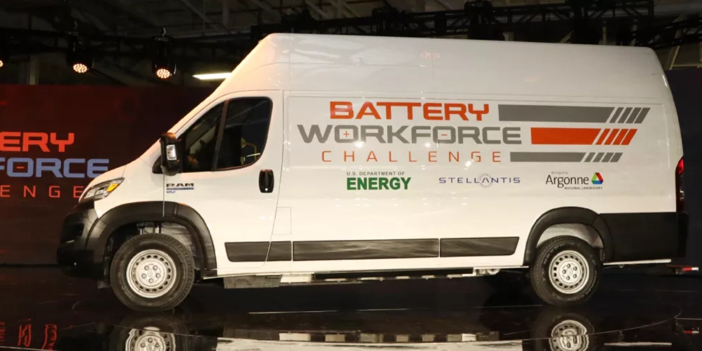
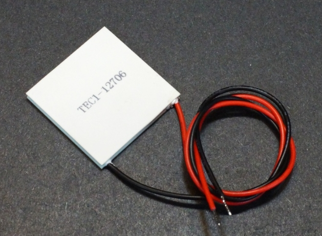
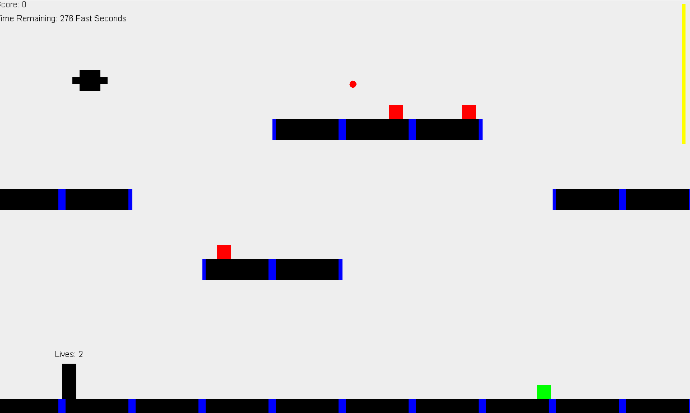

April 2025 - May 2026
The Battery Workforce Challenge is a 3 year competition/project that Rose-Hulman participates in. The goal is to build a battery for an electric van. I am part of the Battery Management System Sub-Team, where we test the battery's safety features, notably the High Voltage Interlock Loop (HVIL). We also test the battery's current and temperature to make sure they are at safe levels. We create the testbenches using MATLAB Simulink.

August 2023 - May 2024
My senior year of high school, I worked with a partner on a capstone project for my PLTW Engineering Design and Development class. I had been in two previous PLTW classes in high school. Our project was a shoulder icing device for sports injuries, especially racket sports like tennis. Our device used Peltier Cooling Modules, which are pictured below. It strapped onto your shoulder and started cooling with a switch.

November 2024
For my Object Oriented Software Development (CSSE 220) class, the final project was to make a video game in a team of three. I worked with two classmates over a period of three weeks to build a video game from scratch in Java. Our video game included multiple levels, enemies, goals, and platforms. Notably, our game was appreciated for having very smooth mechanics and gameplay.
